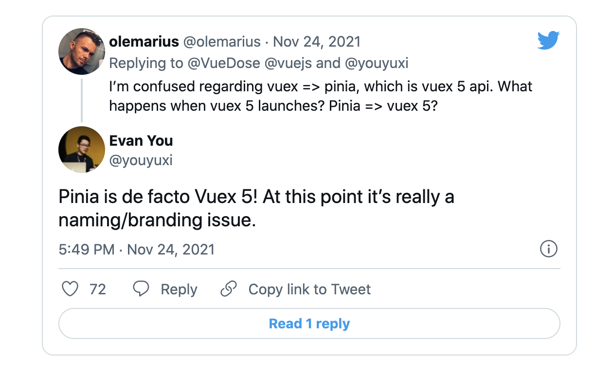

class: middle, center State 管理ライブラリの話 --- State 管理 = アプリケーションの状態の管理 -- - 1画面の中で完結する状態 (ツールチップの開閉, ローディング状態) は、View に状態を持たせて管理すれば良い ``` const [open, setOpen] = useState(); ``` -- - 1画面の中で完結しない状態 (ユーザー情報, 設定など) をうまく交通整理しながら扱うためにライブラリが必要になる --- React 向けの State 管理ライブラリ - Redux Toolkit - Context API - Recoil - MobX - xstate - Zustand - Jotai - Valtio --- Redux Toolkit https://redux-toolkit.js.org/ - 昔から使われている Redux と、Redux 周りの各種ベストプラクティスをパッケージ化したもの - 2021年のステート管理本命 (私見) --- Redux Toolkit https://redux-toolkit.js.org/tutorials/quick-start ```js export const counterSlice = createSlice({ name: 'counter', initialState, reducers: { increment: (state) => { state.value += 1 }, decrement: (state) => { state.value -= 1 }, incrementByAmount: (state, action) => { state.value += action.payload }, }, }) ``` --- Context API https://reactjs.org/docs/context.html - ライブラリではなく、React 自体の機能 - Context を作って View に流し込む。 - 大規模な Context を作るとパフォーマンスに問題が出やすい --- Recoil https://github.com/facebookexperimental/Recoil - Facebook が実験的に作っている state 管理ライブラリ --- MobX https://mobx.js.org/README.html - 昔からある Redux 対抗の state 管理ライブラリ --- xstate https://github.com/statelyai/xstate - Stete Machine という(コンピュータサイエンスの)概念をライブラリ化したもの --- Zustand (ザスタンド) https://zustand.surge.sh/ - Redux 的な API を独自の解釈で最実装したもの (Redux よりもシンプル) - dai-shi さんという日本人がメンテナ --- Jotai https://jotai.org/ - Recoil 的な API を独自の解釈で最実装したもの (Recoil よりもシンプル) - dai-shi さんという日本人がメンテナ --- Valtio (ヴァルシオ) https://github.com/pmndrs/valtio - とてもミニマルな API のステート管理ライブラリ - dai-shi さんという日本人がメンテナ --- Valtio https://github.com/pmndrs/valtio ```js import { proxy, useSnapshot } from 'valtio' const state = proxy({ count: 0, text: 'hello' }) // 状態変更 setInterval(() => { ++state.count }, 1000) // 使う場面 const snap = useSnapshot(state) ``` --- Vue の State 管理ライブラリ - Vuex -- - Pinia <- New! --- Vuex https://vuex.vuejs.org/ - Vue のデファクト State 管理ライブラリ --- Pinia https://github.com/vuejs/pinia - Vue の次世代デファクト State 管理ライブラリ - Composition API 向けに最適化されたデザイン <p style="text-align: center">  </p> --- Pinia https://github.com/vuejs/pinia ```js import { defineStore } from 'pinia' export const useMainStore = defineStore('main', { state: () => ({ counter: 0, name: 'Eduardo', }), ... }); // 使う場面 const main = useMainStore() ``` --- class: middle center End